Über Vincent & Partner
Innovativ.
Persönlich.
Unkompliziert.
Wir begleiten Sie als Sparringpartner auf Augenhöhe.
Von der ersten Idee bis zur messbaren Wirkung.
Ohne Buzzword-Bingo, dafür mit Substanz.
Team.
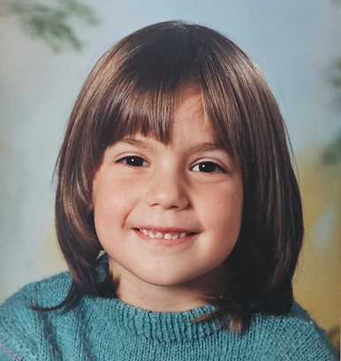
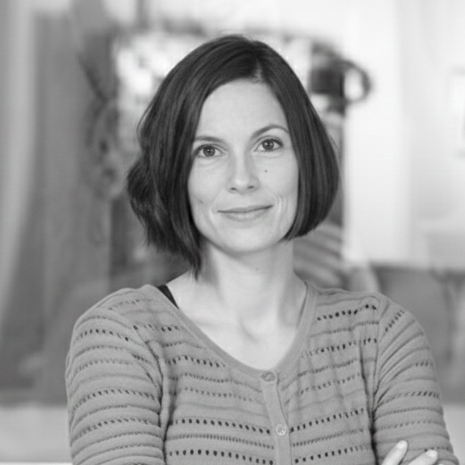
Corinne Puma
Die digitale Visual Merchandiserin mit feinem Gespür für Design, Wirkung und Nutzerführung. Corinne verbindet kritisches Denken mit kreativer Leichtigkeit. Mit sanften Inputs und klarem Blick schafft sie es, ganze Projekte spürbar zu verbessern.
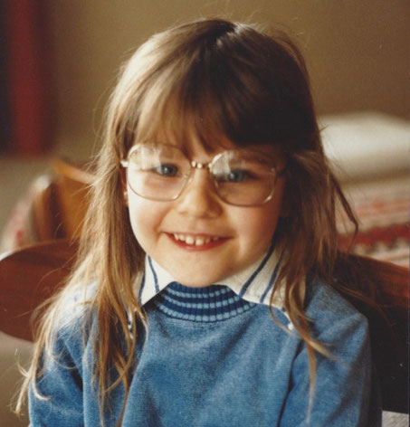
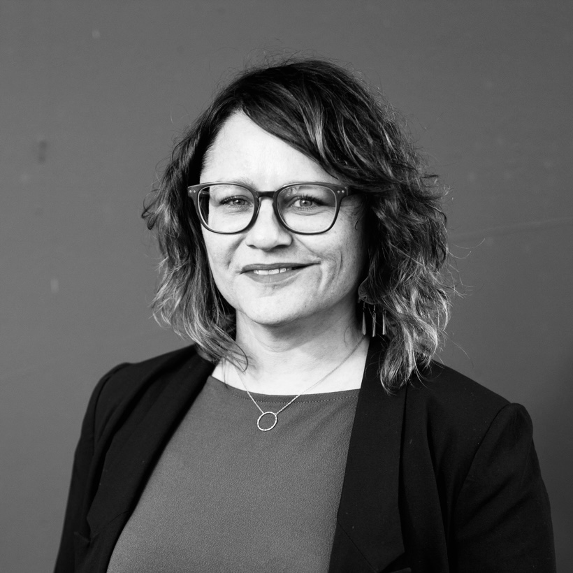
Sybille Wäfler
Die weltbereiste Allrounderin behält in jeder Projektphase stets den Überblick. Bereits während der Planung denkt sie an Details, die niemand auf dem Radar hat. Alle schätzen Sybille mit ihrer herzlichen Art als unsere Quoten-Bernerin.
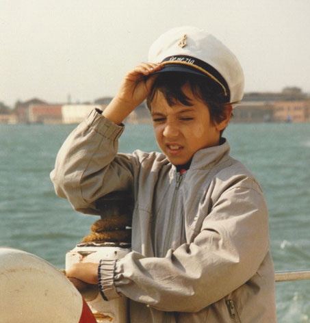
Reto Puma
Kreativ, innovativ und ganz klar immer «outside of the box» statt 0815. Denkt meist etwas zu schnell und einen Schritt zu weit. Für ihn sind «Probleme» nur getarnte Gelegenheiten, spricht die Sprache der Kunden und glaubt, Entwickler und Technik-Geeks gleichermassen zu verstehen.
Firmen
Geschichte.
Von der One-Man-Show zum Double-Women-Management.
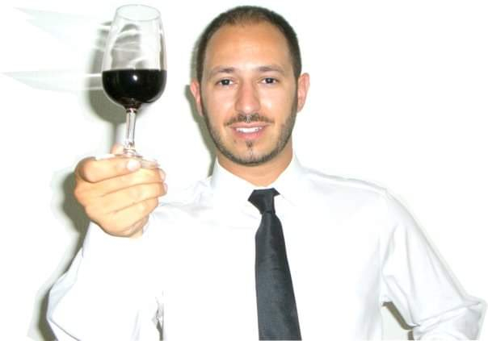
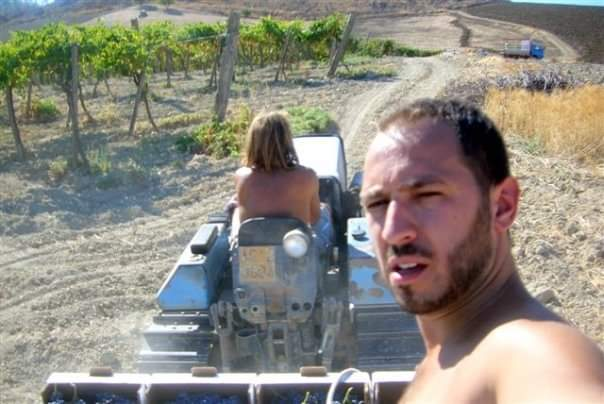
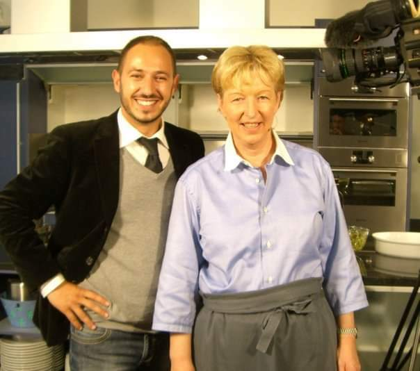
Gründung
Mit der Idee, sonnengereifte Trauben aus Sizilien zu importieren und damit in der Schweiz Qualitätswein herzustellen, gründete Reto Puma 2005 die Firma VINC.ENT Trade & Consulting GmbH.
Wobei VINC.ENT aus folgendem Wortspiel entstanden ist: VINO, VINCERE, CENT, ENT.
Um diese Idee umsetzen zu können, ist er mehrere Jahre gleichzeitig als externer Berater und Projektleiter tätig (ja im Alter von 25; ohne Kinder kann man das noch locker). Für Rückenwind in Sachen Vermarktung des eigenen Weins sorgte sein Engagement als «Weinratgeber» im Regionalfernsehen bei Annemarie Wildeisen.
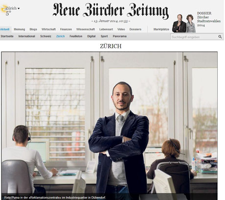
Entwicklung
Um professionell Wein herstellen zu können, benötigt man vor allem 2 Dinge: Zeit und Geld.
Massnahmen zur Kundengewinnung wurden erfolgreicher und messbar, sofern diese online umgesetzt wurden. Die Beratung entwickelte sich immer mehr zum digitalen Consulting.
Ein eigenes Projekt musste her, um die digitalen Möglichkeiten im Marketing und der Automatisierung selber auszuprobieren und umzusetzen. Die Reklamationszentrale war geboren mit allem Drum und Dran.
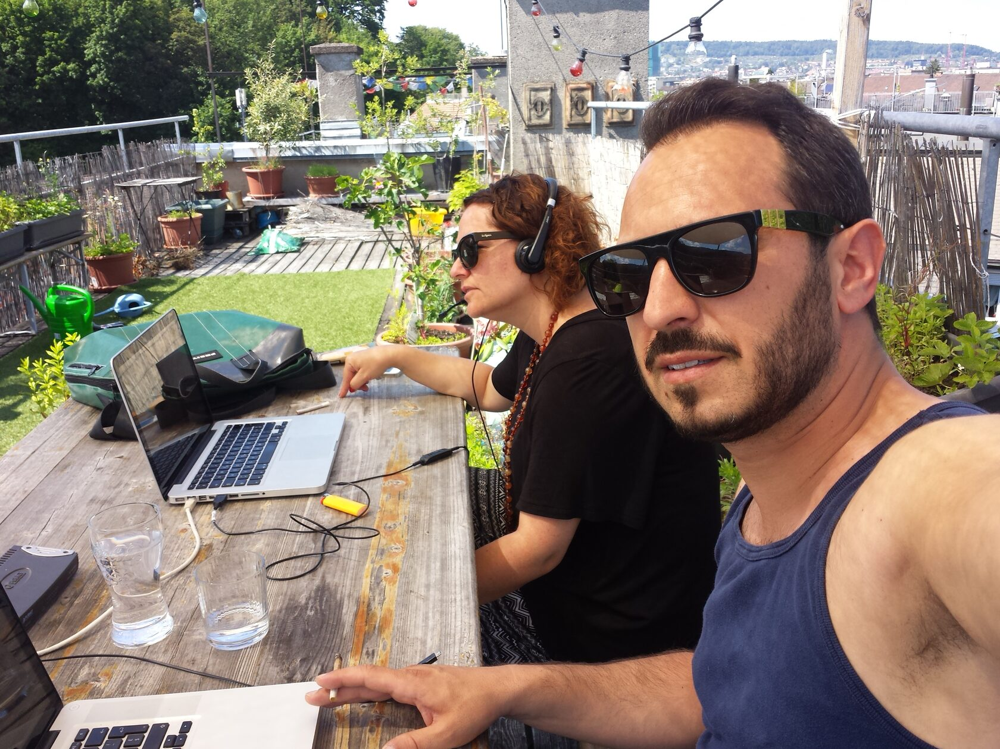
Verstärkung
Reto Puma lernte Sybille Wäfler in einer PR-Weiterbildung kennen. Die gemeinsame Abschlussarbeit mit einem Testkunden bescherte den beiden nicht nur Bestnoten, sie erhielten dafür auch gleich den ersten gemeinsamen Beratungsauftrag.
Sybille kündigte ihren Marketingjob bei einem internationalen Reiseveranstalter und beteiligte sich fortan als Partnerin und wichtiger Teil des Core-Teams.
Aus VINC.ENT wurde Vincent & Partner und wir wechselten unser Büro von der Dachterrasse an die Räffelstrasse in der Binz. Welcome Sybille.
Spezialisierung
Nachdem wir unsere externen Beratungsmandate abgelegt hatten, konzentrierten wir uns voll auf unsere eigene Webagentur.
Nebst Webdesign, Suchmaschinen-Marketing und digitaler PR spezialisierten wir uns in weiteren digitalen Marketing-Massnahmen und bauten unser Angebot aus.
Teamwork makes the dreamwork.
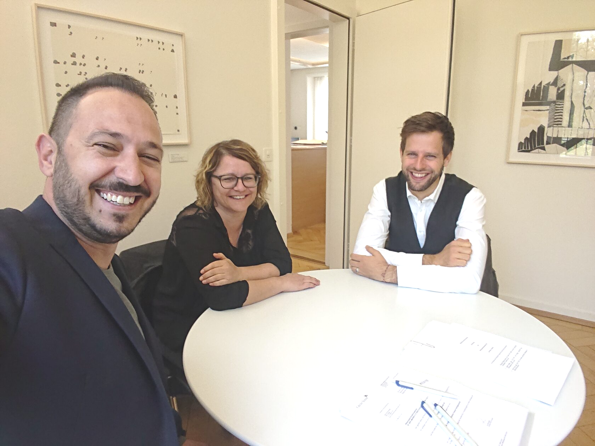
Schärfung
In Raphael Joos fand Vincent erneut einen wichtigen Partner. Als talentierter Stratege und Analyst prägte er die Strategie sowie die Firmenentwicklung massgeblich. Rentabilität, Skalierbarkeit und Aktionärbindungsverträge rückten immer mehr in den Fokus.
Nicht unbedingt die Bereiche, in denen eine Kreativagentur stark ist. Danke Rapha.
Professionalisierung
Mit Manuela Schlumpf konnten Abläufe automatisiert und professionalisiert werden. Die langjährige Werberin und freischaffende Journalistin brachte mehr als nur Leadership-Qualitäten und Zahlenflair mit.
Sie ergänzte das Team perfekt und steuerte die Agentur mit viel Geschick und Einfühlungsvermögen aus den «stürmischen Zeiten» der Pandemie. Danke 1000 Manu!
Automatisierung & KI
Wachsen um jeden Preis war nie unser Ziel. Stattdessen entschieden wir uns bewusst für Spezialisierung statt Vergrösserung.
Mit My-Onlineshop automatisierten wir das Onboarding unserer E-Commerce-Lösung mit Bexio. Parallel dazu hielten KI-Agents Einzug in unseren Arbeitsalltag: von Analyse über Content bis hin zur Prozessautomatisierung.
Ein besonderes Comeback: Nach dem Mutterschaftsurlaub kehrte Corinne Puma zurück – mit frischer Perspektive, viel Herzblut und der gleichen Energie wie zuvor. Welcome back, Corinne my dear!